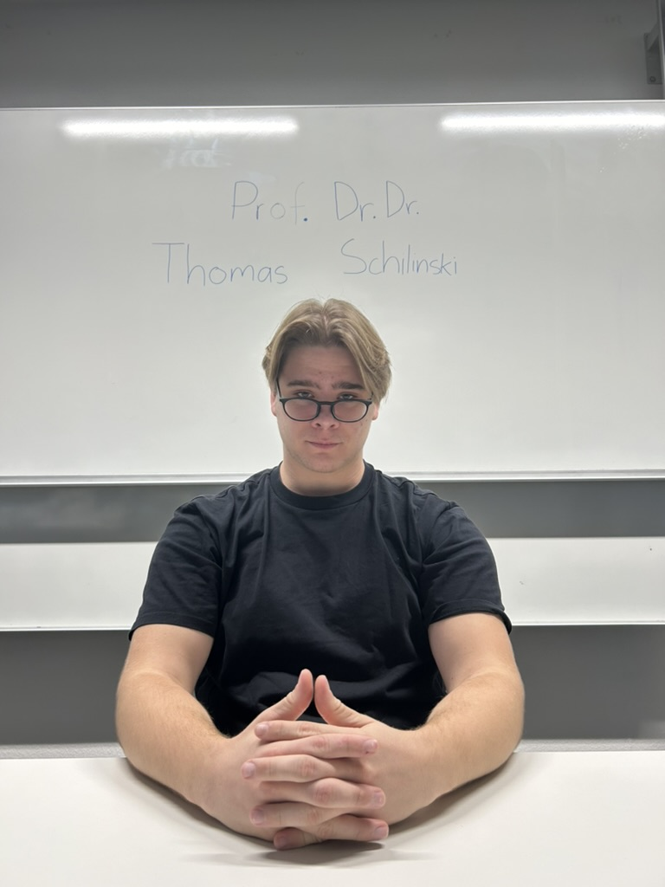

Prof. Dr. Dr. Thomas Schilinski
Akademische Exzellenz und Leidenschaft für die Forschung
Herzlich willkommen auf meiner "Über mich" Seite. Mein Name ist Dr. Thomas Schilinski, und ich freue mich, Ihnen einen Einblick in mein akademisches und berufliches Leben geben zu können.
Bildungsweg:
Dr. Thomas Schilinski legte den Grundstein für seine akademische Karriere an der Universität Heidelberg, wo er sein Studium der Physik absolvierte. Seine außergewöhnliche Hingabe und sein herausragendes Talent führten zum Erwerb seines ersten Doktortitels in Physik.
Eine erfolgreiche Forschungslaufbahn:
Dr. Schilinski führte seine wissenschaftliche Reise über die Grenzen hinaus, um an renommierten internationalen Institutionen wie dem CERN in Genf und dem Fermilab in den USA zu forschen. Seine Arbeit konzentrierte sich auf die Teilchenphysik und Astrophysik, was zu einer beeindruckenden Anzahl von wissenschaftlichen Veröffentlichungen in angesehenen Fachzeitschriften führte.
Dieser unermüdliche Forschungsgeist und die breite Expertise führten zu einem zweiten Doktortitel, diesmal in Astrophysik. Die Kombination seiner Kenntnisse in beiden Bereichen erlaubte es ihm, sich mit einer Vielzahl wissenschaftlicher Herausforderungen auseinanderzusetzen.
Lehre und Professur:
Parallel zu seiner Forschungstätigkeit setzte Dr. Schilinski sein Engagement für die Bildung fort. Nach Jahren als Gastdozent wurde ihm der Titel eines Professors verliehen. Heute hat er die Ehre, sein umfassendes Wissen an Studierende weiterzugeben und sie zu inspirieren, die Grenzen des Wissens zu erweitern.
Leidenschaft und Ziele:
Dr. Schilinski bleibt seiner Leidenschaft für die Wissenschaft und das Streben nach Exzellenz treu. In seiner Freizeit liest er immer noch wissenschaftliche Artikel und engagiert sich in Forschungsprojekten. Seine Ziele sind es, weiterhin dazu beizutragen, das Verständnis des Universums zu vertiefen und junge Talente in der wissenschaftlichen Welt zu fördern.
Ich hoffe, dass diese Zusammenfassung Ihnen einen Einblick in mein akademisches und berufliches Leben gegeben hat. Wenn Sie weitere Informationen wünschen oder Kontakt aufnehmen möchten, stehe ich Ihnen gerne zur Verfügung. Vielen Dank für Ihr Interesse.



Copyright @ 2023 SchoolAid. All Rights Reserved.